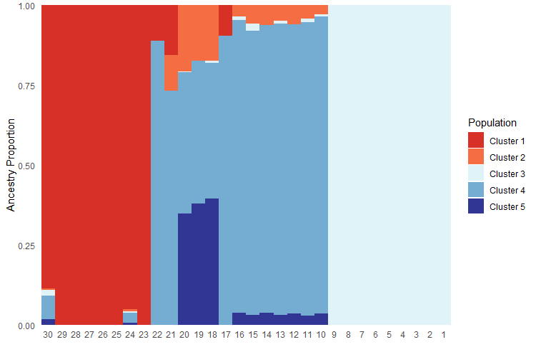
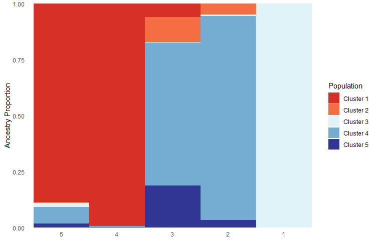
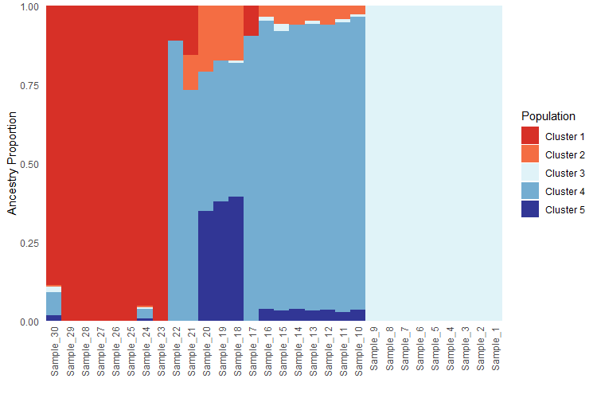
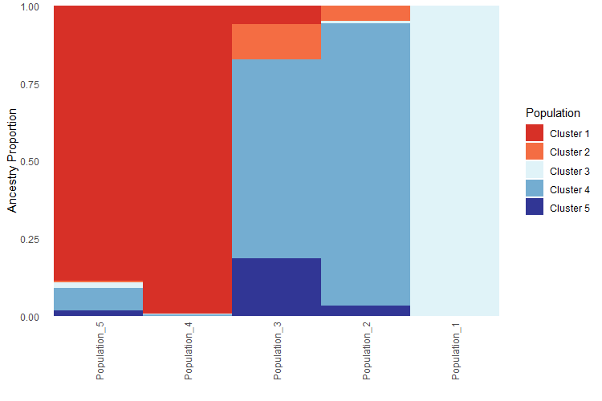

Sorting a Q-matrix for plotting in PopGenHelpR
Source:vignettes/articles/PopGenHelpR_sortQmatrix.Rmd
PopGenHelpR_sortQmatrix.RmdPurpose
To sort a q-matrix of ancestry coefficients for use in the
PopGenHelpR function Ancestry_barchart.
Overview
We often want to plot our structure-like ancestry bar chart in a
specific order. We may wish to visualize the ancestry chart by grouping
individuals of the same cluster together (e.g., ordered by cluster) or
by latitude or longitude (to match the pie chart map). To do this, we
can use the ind.ord and pop.ord arguments in
the Ancestry_barchart function.
Load the data
# Load PopGenHelpR
library(PopGenHelpR)
# Load data
data("Q_dat")
# First, we separate the list elements into two separate objects. The q-matrix (Qmat) and the locality information for each individual (Loc).
Qmat <- Q_dat[[1]]
Loc <- Q_dat[[2]]Sorting a Q-matrix
First, we will create a vector that contains the order of individuals
and populations that we want our barcharts to be in. Then we use the
ind.order and pop.order arguments to specify
them. ***Note that the individuals and populations in
ind.order and pop.order must match the
individual and population names in your population assignment file (the
pops argument).
# Set orders
Ind_ord <- rev(seq(1,30))
Pop_ord <- rev(seq(1,5))
Anc_ord <- Ancestry_barchart(Qmat, Loc, K = 5, col = c('#d73027', '#f46d43', '#e0f3f8', '#74add1', '#313695'), ind.order = Ind_ord, pop.order = Pop_ord)
Anc_ord$`Individual Ancestry Plot`
Anc_ord$`Population Ancestry Plot`
We can do the same thing if our sample and population names are
character strings; just remember that PopGenHelpR requires
that your individual and population names are the same type; they must
be characters or numeric.
# Make the sample and population names characters
Qmat_char <- Qmat
Qmat_char$Ind <- paste("Sample", Qmat_char$Ind, sep = '_')
Loc_char <- Loc
Loc_char$Sample <- paste("Sample", Loc_char$Sample, sep = '_')
Loc_char$Population <- paste("Population", Loc_char$Population, sep = '_')
Ind_ord_char <- paste('Sample', Ind_ord, sep = '_')
Pop_ord_char <- paste('Population', Pop_ord, sep = '_')
Anc_ord_char <- Ancestry_barchart(Qmat_char, Loc_char, K = 5, col = c('#d73027', '#f46d43', '#e0f3f8', '#74add1', '#313695'), ind.order = Ind_ord_char, pop.order = Pop_ord_char)
Anc_ord_char$`Individual Ancestry Plot`
Anc_ord_char$`Population Ancestry Plot`
Questions???
Please email Keaka Farleigh (farleik@miamioh.edu) if you need help generating a q-matrix or with anything else.